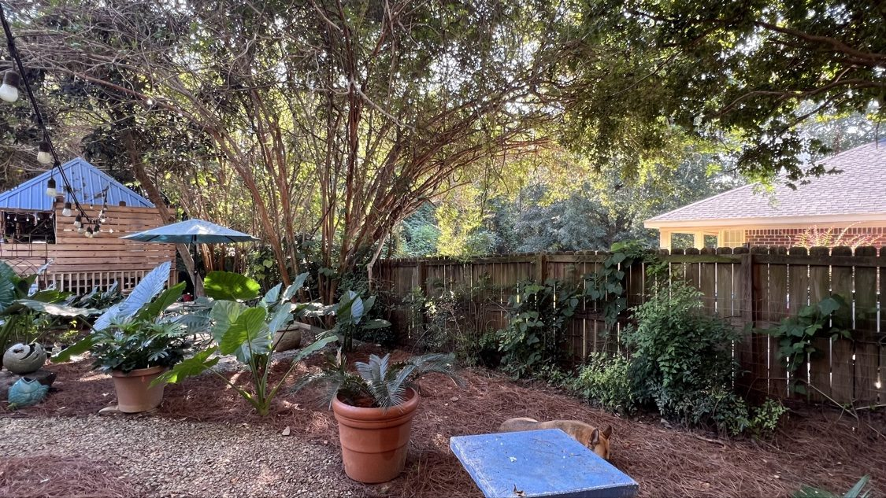

From the blog
Fall Leaf and Yard Debris Cleanup in Mobile, AL
November 16, 2026

Fall in Mobile does not look like fall up north. The live oaks drop leaves all through November and December, pine needles blanket the beds, and sweetgum balls roll into every corner of the driveway. Add one windy cold front and a yard that looked fine on Monday is covered by Friday. A fall leaf and yard debris cleanup gets it all handled in one visit so your yard looks kept up through the holidays.
What fall leaves do to your yard
- They smother the grass. A thick mat of wet oak leaves blocks sun and air, and the grass underneath thins out or dies back over winter.
- They pack the gutters. Leaves and pine needles wash off the roof and settle in the gutters, where they hold water against the fascia and overflow in the next rain.
- They stain concrete. Wet leaves left sitting on a driveway or walkway leave dark tannin stains that get harder to remove the longer they sit.
- They hide hazards. Limbs and branches under a leaf pile are easy to trip on, and a hidden branch can damage a mower blade when you finally cut the grass.
- They feed pests. Damp leaf piles are shelter for roaches, ants, and rodents close to the house.
What a cleanup covers
A standard fall cleanup starts with blowing leaves and pine needles out of the beds, off the driveway and walkways, and away from the house. We rake up what the blower leaves behind, pick up fallen limbs and branches, and clear leaves out of the gutters so water can drain. Flower beds get edged back into shape, and pine straw beds get raked smooth. If your beds look faded after the cleanup, pine straw colorant can bring the color back without buying new straw.
For bigger jobs we cut fallen limbs to length and stack the debris at the curb for county pickup. That is the part most homeowners put off, because dragging limbs to the curb is the heaviest work of all. We handle it so you do not have to.
When to book it
The best time for a fall cleanup in Mobile is mid November through early December, after the first big leaf drop but before holiday guests arrive. Homes under big live oaks in West Mobile, Midtown, Saraland, Satsuma, Semmes, and Theodore usually need a second pass in January, once the oaks finish shedding. If you are hosting Thanksgiving or Christmas, book at least a week ahead so the yard has time to settle and look its best.
After a storm, the timing changes. Wind brings down limbs all at once, and a cleanup right after the storm keeps debris from sitting long enough to stain concrete or clog drains. If a cold front just came through, that is a good time to call.
How to keep it cleaner between cleanups
- Blow leaves off the driveway and walkways once a week so they never sit long enough to stain.
- Keep leaves out of the gutters by checking the downspouts after every big rain.
- Trim low hanging limbs before winter so the next wind does not bring them down.
- Do not pile leaves against the house. Damp piles against siding invite pests and hold moisture on the wood.
Buried in leaves? We can help.
Kinney Cleaning Services does fall leaf and yard debris cleanup across Mobile County, from West Mobile to Saraland and Satsuma. Veteran owned and operated, backed by 5-Star Google Reviews.
Call (251) 767-0754 Get a Custom Quote